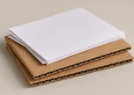
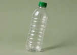
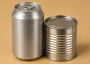
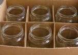
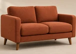

Papel y cartón- Periódicos y hojas
- Cajas plegadas
- Papel limpio y seco
Separá los materiales y revisá cómo prepararlos para la entrega.

Papel y cartón
Plástico
Metales
VidrioBotellas plásticas vacías, latas, cartón y papel limpios, frascos de vidrio.
Pañales, papel higiénico y servilletas usadas, empaques de snacks y cerámica rota.
Equipos que requieren una opción de entrega específica.

Consultá tamaños, cantidades y jornadas autorizadas.
6 materiales de referencia
Consultá qué recipiente pide cada punto de entrega.
Probá otro nombre o borrá la búsqueda para volver a la guía.